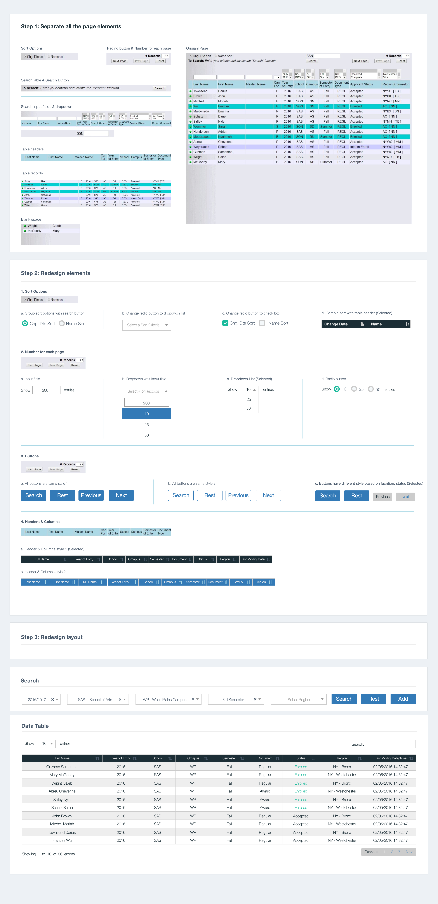
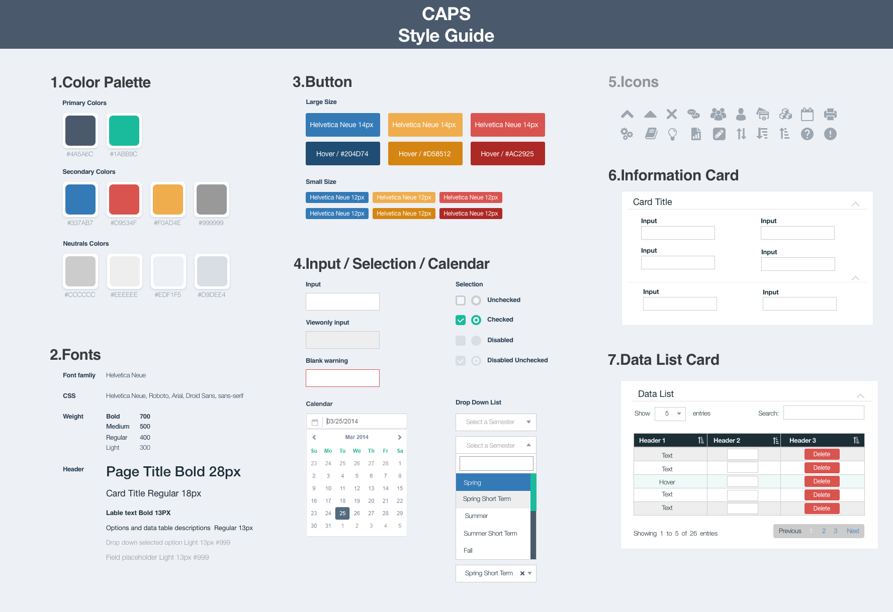

1. BACKGROUND
CAPS(College Administrative Process System), consisting of nine modules responsible for institutional operations, is a comprehensive system for college and university administration. As the only designer in the team, I improved the user experience of this platform from out-dated IBM green screen to the web application, also redesigned the online application user workflows with a detailed UI guide.


2.Problems
After I experienced the platform and studied the user support data, I figured out the following issues.
First, inconsistency UI caused an obstacle of communication between the system and end-users. They got confused from feature to feature, sometimes even prevent them from finishing their workflow. To accomplish their tasks, they need to contact the development team; This distracted the team because the developers end up spending much time doing user support or data entry job.
Second, users are forced to experience a web platform with an unsmooth legacy PRG platform user behavior, for example, during the end of the semester, employees needed to type over hundreds of course sessions into the system manually. Compared to a system with friendly user experience, our system demands staff spent unnecessary steps to get their jobs done.
Last but not least, different types of users access the platform by their unique time routine and device. It was an inconvenience for all the users' to use our system only on the desktop computer. The limitation of accessibility cause delay to finish the tasks and delays lead to serious results. For example, senior students were short of major-specific courses and delay graduation because, during the registration week, they were on vacation and cannot find a desktop to log in to the system to register.
3. PLAN & EXECUTION
To solve all these problems, I made a plan. I separated it into three stages, UI design stage raise users awareness of up-to-date design, workflows design was for embracing user's engagement, and reachability desgin is for usability improvement and design iteration.
For removing the obstacle of communication between users and the system. Each page should use the same visual language to talk with our users. My plan was to design a UI library which devilsers consisntcy visul experience to users.
For the unsmooth user workflow, I planned to facilitate user research. To understand the whole users' story, and then I can get insights and provide solutions.
For the last one, I planned to prioritize content on pages, gathered all the device types, and the timeframe users active on the platform by user archetypes. So with all these insights, I was going to implement adaptive design and build multi-channels for announcing new features and release.

3.1 UI design
I gathered the most visited pages on our systems and cut these pages into essential design pieces, field, and dropdown. After all these small pieces redesigned, I put them back to a design pattern with versions, like the data table. I refreshed the design of these pages with one final version. At last, I document these into one UI library.

Additionally, I code HTML/CSS templates based on the UI library. All the developers coded the same visual and layout thought all the user interfaces.

3.2 Workflow Design
This first task in this phase was user research. I observed the stuff's daily office routers, talked with the student about their campus lives, interviewed professors about their pain points.


I created user journey and behavior patterns, figured out which part can be improved. I tested all the solutions with end-users, in the meantime, discussed with the development team with the implementing plan.


After optimized these workflows, people save up to 90% of their time to finish the same tasks.
3.3 Adaptive Design
There are several user archetypes, and each of them has their behavior patterns. Registrars use office desktops to review course information; professors use tablets to check students' attendance, and students use their cell phones to pay tuition. Considering these scenarios, I introduce responsive design to the team. Since we implemented the CAPS UI library and open source JS libraries, we spend less effort while achieving more effects. This was an excellent opportunity to iterate the UI library. After eight weeks of design, testing, and development, CAPS became a responsive system.

For users to learn these new workflows and features, I made online training videoes. I integrate the online bug submit tool and online help documents to this platform as well.
4.Takeaway
Framing the right problems is a critical step to design. As a designer, learning to communicate with users is a fundamental way to frame the problems. Fitting into the team, listening, contributing, taking ownership, and collaborating smart are the elements to make a project/product success.